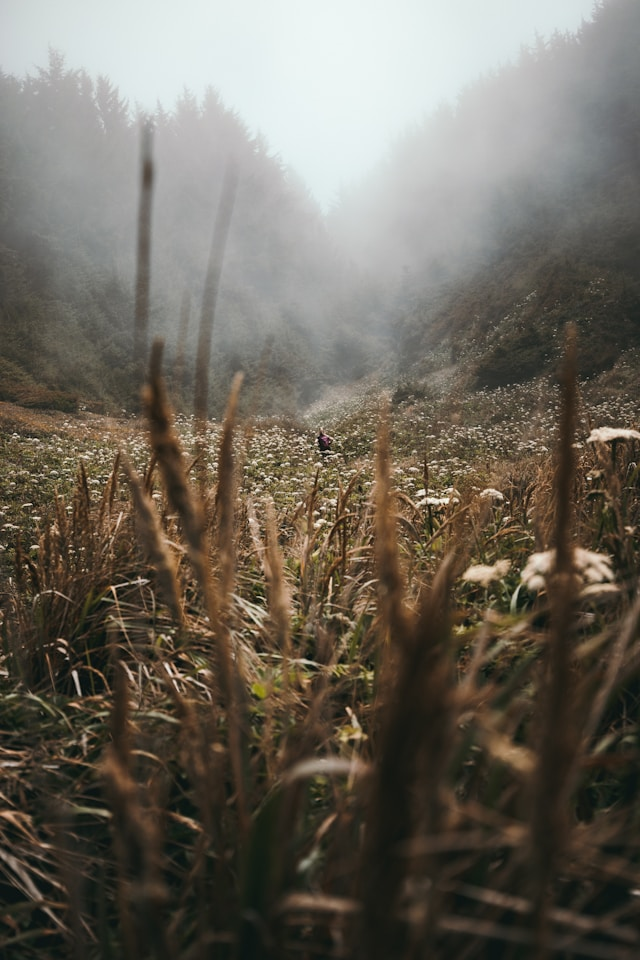
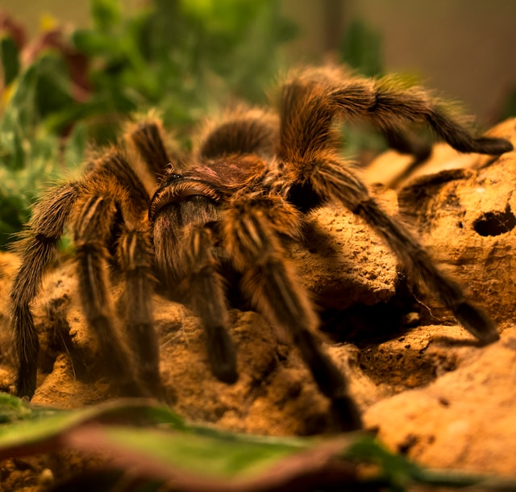

The little Spindle takes a deep breath and resolves to be courageous. She knows the long grass ahead of her is intimidating, yet her adventurous attitude propels her forward. With determination in her heart, she begins to walk through the thick blades of grass, her tiny legs firmly moving her onward.
As she travels deeper into the grass, her surroundings alter. The blades tower over her, creating lengthy shadows that dance in the dappled sunlight. The sounds of rustling leaves and chirping insects fill the air, creating a natural symphony around her.
As she crawls through dense grass, her surroundings undergo a stunning metamorphosis. The sky above begin to change to an orangey pink gradient, portraying the heavens in warm, welcoming tones. The departing sunlight gives the area a golden hue, illuminating the grass surrounding her in a beautiful, ethereal light.
The air is infused with a sense of calm, as if nature is taking a moment to appreciate the beauty around it. The delicate rustling of the grass merges nicely with the soft chirping of crickets, creating a tranquil tune that envelops the small spider as she continues her journey.
Just as the rain stops and Spindle feels a flood of relief wash over her, her gaze is pulled to movement ahead. Another spider emerges from the grass, scaring Spindle for a second. Spore, a joyful and energetic spider, appears thrilled to have met a new pal.
He's quite a ball of energy that loves to play and explore, just like Spindle!. He asks Spinner to join him in a game of hide and seek in the grass!
